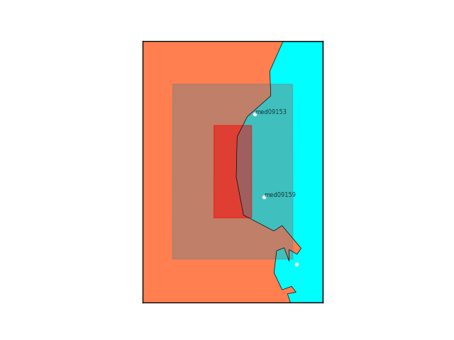

STEP 1: POI(s) selection
This step aims to select, from NEAMTHM18 database, the POI(s) which fall within a rectangular area containing the coastlines around the target site. Such rectangular area can be built in two ways:
-
if the high-resolution inner grid is available and declared within the JSON input file, the grid domain is used to draw a rectangle whose sides are then expanded by \(X\) kilometers perpendicularly (\(X=10\) km by default); 
-
if the key "grdfile" in the input file is empty while the coordinates of the target site are provided, the first rectangle is drawn by moving \(\pm X^\circ\) from the site both vertically and horizontally (\(X = 0.1^\circ\) by default) and then its sides are extended as before;
if both the keys "grdfile" and "lonlat" are empty, the labels of the POIs are expected to be given by the user in the following field "poinames".
The outputs of this step are text files with labels (_POI_name.txt) and coordinates (_ts.dat) of the selected POI(s). The last one is formatted to make the HySEA code save the time series at the POIs when running the tsunami simulations (Step 5).